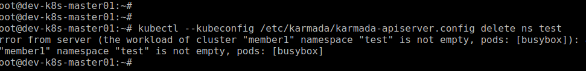

Karmada 有趣的玩法：自定义准入控制器
Kubernetes 提供了很多确保工作负载安全的功能，其中有一项是准入控制器(Admission Controllers)， 在对象持久化之前对 API Server 的请求进行拦截，可以更改请求对象，也可以完全拒绝请求。Kubernetes有两个特殊的准入控制器: MutatingAdmissionWebhook 和 ValidatingAdmissionWebhook，分别作为修改和验证请求对象的准入控制 WebHook。
回到 Karmada 的应用场景中来，笔者之前收到用户反馈，有一些 Workload 和 PVC 并不在 Karmada 的控制面，删除 Namespace 时没有检查或因为 member 集群多检查没有到位，在 Karmada 控制面删除 Namespace 后, 有些 member 集群的 Namespace 下的 Workload 和 PVC 被级联删除了。在生产环境中，这种失误往往能导致灾难级的故障。
对于这个问题，我们可以通过验证（Validating）准入控制来解决，在 Karmada 控制面删除 Namespace 或 CRDs 时，去遍历 member 集群，如果 Namespace 下有 Workload 或 PVC, CRDs 还有资源对象存在就拒绝请求。
方案
以删除 Namespace 为例，当 API Server 收到删除 Namespace 的请求时，ValidatingAdmissionWebhook 就去调用我们自定义的 WebHook 服务，WebHook 服务从 Karmada 的 AA Server 中查找该 Namespace 有没有 Pod ，如果有，则拒绝请求。
实现
其实实现起来非常简单，通过HTTP Server 接收 AdmissionRequest 响应 AdmissionResponse 就行。我们可以参考 Karmada 社区的 WebHook，通过 WebHook Manager 来管理 WebHook，可以很优雅的复用和封装。
func Run(ctx context.Context, opts *options.Options) error {
config, err := ctrl.GetConfig()
if err != nil {
panic(err)
}
hookManager, err := ctrl.NewManager(config, ctrl.Options{
Scheme: NewSchema(),
WebhookServer: &webhook.Server{
Host: opts.BindAddress,
Port: opts.SecurePort,
CertDir: opts.CertDir,
CertName: opts.CertName,
KeyName: opts.KeyName,
TLSMinVersion: opts.TLSMinVersion,
},
LeaderElection: false,
MetricsBindAddress: opts.MetricsBindAddress,
HealthProbeBindAddress: opts.HealthProbeBindAddress,
})
if err != nil {
klog.Errorf("failed to build webhook server: %v", err)
return err
}
if err := hookManager.AddHealthzCheck(CheckEndpointHealthz, healthz.Ping); err != nil {
return fmt.Errorf("failed to add %q health check endpoint: %v", CheckEndpointHealthz, err)
}
if err := hookManager.AddReadyzCheck(CheckEndpointReadyz, healthz.Ping); err != nil {
return fmt.Errorf("failed to add %q health check endpoint: %v", CheckEndpointReadyz, err)
}
klog.Info("registering webhooks to the webhook server")
hookServer := hookManager.GetWebhookServer()
hookServer.Register("/validate-namespace", &webhook.Admission{Handler: namespace.NewValidatingAdmission(hookManager)})
// blocks until the context is done.
if err := hookManager.Start(ctx); err != nil {
klog.Errorf("webhook server exits unexpectedly: %v", err)
return err
}
// never reach here
return nil
}
同样，我们逻辑也在 Handle 函数中处理。先列出 member 集群，然后再检查 member 集群下的 Namespace 有没有运行 Pod。如果有，则拒绝请求。
func (v *ValidatingAdmission) Handle(ctx context.Context, req admission.Request) admission.Response {
klog.Infof("%s namespace %q", req.Operation, req.Name)
clusters, err := v.ClusterList(ctx)
if err != nil {
return admission.Denied(err.Error())
}
for _, c := range clusters {
if err := v.PodList(c, req.Name); err != nil {
return admission.Denied(err.Error())
}
}
return admission.Allowed("")
}
需要注意的是，Pull 模式需要部署 ANP 。感兴趣的读者可以去 Karmada 社区查看这方面的文档。
func (v *ValidatingAdmission) ClusterList(ctx context.Context) ([]string, error) {
clusterList := &clusterv1alpha1.ClusterList{}
if err := v.Client.List(ctx, clusterList); err != nil {
return nil, fmt.Errorf("failed to list clusters, error: %v", err)
}
var clusters []string
for _, c := range clusterList.Items {
// TODO Pull 模式可以部署 apiserver-network-proxy（ANP）来访问。这里跳过.
// https://github.com/karmada-io/karmada/blob/master/docs/userguide/aggregated-api-endpoint.md
if c.Spec.SyncMode == clusterv1alpha1.Pull {
continue
}
clusters = append(clusters, c.Name)
}
return clusters, nil
}
这里通过 Karmada API Server Proxy 获取 Pod
func (v *ValidatingAdmission) PodList(cluster, namespace string) error {
uil := fmt.Sprintf("%s/apis/cluster.karmada.io/v1alpha1/clusters/%s/proxy/api/v1/namespaces/%s/pods", v.Config.Host, cluster, namespace)
request := v.Clientset.RESTClient().Get().RequestURI(uil)
result := request.Do(context.Background())
if err := result.Error(); err != nil {
return fmt.Errorf("result err: %v", err)
}
pods, err := result.Raw()
if err != nil {
return fmt.Errorf("raw err: %v", err)
}
podList := &corev1.PodList{}
if err := json.Unmarshal(pods, podList); err != nil {
return fmt.Errorf("unmarshal err: %v", err)
}
if len(podList.Items) == 0 {
return nil
}
var activityPods []string
for _, p := range podList.Items {
fmt.Println(p.Name)
activityPods = append(activityPods, p.Name)
}
return fmt.Errorf("the workload of cluster %q namespace %q is not empty, pods: %s", cluster, namespace, activityPods)
}
部署
容器化部署也行，笔者这里是二进制运行。
生成证书
openssl genrsa -out ca.key 2048
openssl req -x509 -new -nodes -key ca.key -subj "/C=CN/ST=Guangdong/L=Guangzhou/O=karmada/OU=System/CN=karmada" -days 3650 -out ca.crt
openssl genrsa -out tls.key 2048
openssl req -new -nodes -sha256 -subj "/C=CN/ST=Guangdong/L=Guangzhou/O=kubernetes/OU=System/CN=karmada" -key tls.key -out tls.csr
openssl x509 -req -days 3650 \
-extfile <(printf "keyUsage=critical,Digital Signature, Key Encipherment\nextendedKeyUsage=serverAuth,clientAuth\nauthorityKeyIdentifier=keyid,issuer\nsubjectAltName=DNS:karmada-custom-webhook.karmada-system.svc.cluster.local,DNS:localhost,IP:172.0.0.1,IP:172.31.6.145") \
-sha256 -CA ca.crt -CAkey ca.key -set_serial 01 -in tls.csr -out tls.crt
创建 Validating 配置文件，只验证删除请求。Namespace 是集群级别的资源，所以 scope 是 Cluster。
---
apiVersion: admissionregistration.k8s.io/v1
kind: ValidatingWebhookConfiguration
metadata:
name: validating-config
labels:
app: validating-config
webhooks:
- name: "namespace-policy.example.com"
rules:
- apiGroups: [""]
apiVersions: ["v1"]
operations: ["DELETE"]
resources: ["namespaces"]
scope: "Cluster"
clientConfig:
url: https://172.31.6.145:8443/validate-namespace
caBundle: {{caBundle}}
failurePolicy: Fail
sideEffects: None
admissionReviewVersions: ["v1"]
timeoutSeconds: 3
应用 Validating 配置
ca_string=$(sudo cat ca.crt| base64 | tr "\n" " "|sed s/[[:space:]]//g)
sed -i "s/{{caBundle}}/${ca_string}/g" webhook-configuration.yaml
kubectl --kubeconfig /etc/karmada/karmada-apiserver.config create -f webhook-configuration.yaml
运行 WebHook 服务
./karmada-custom-webhook \
--kubeconfig /etc/karmada/karmada-apiserver.config \
--cert-dir ./certs
创建测试 Namespace
kubectl --kubeconfig /etc/karmada/karmada-apiserver.config create ns test
在其中一个 member 集群创建一个 Pod
kubectl create -f busybox.yaml -n test
删除 Namespace ，因为有 Pod 在运行，使用拒绝了请求。说明它可以正常的工作。 
最后
当然，这也只是其中一种保障生产安全的一种方式，仅供参考。在 kubernetes 生态中，也有一些工具可以做到。
参考链接： https://github.com/karmada-io/karmada
文章中的源码： https://github.com/prodanlabs/karmada-examples